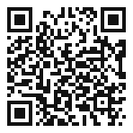
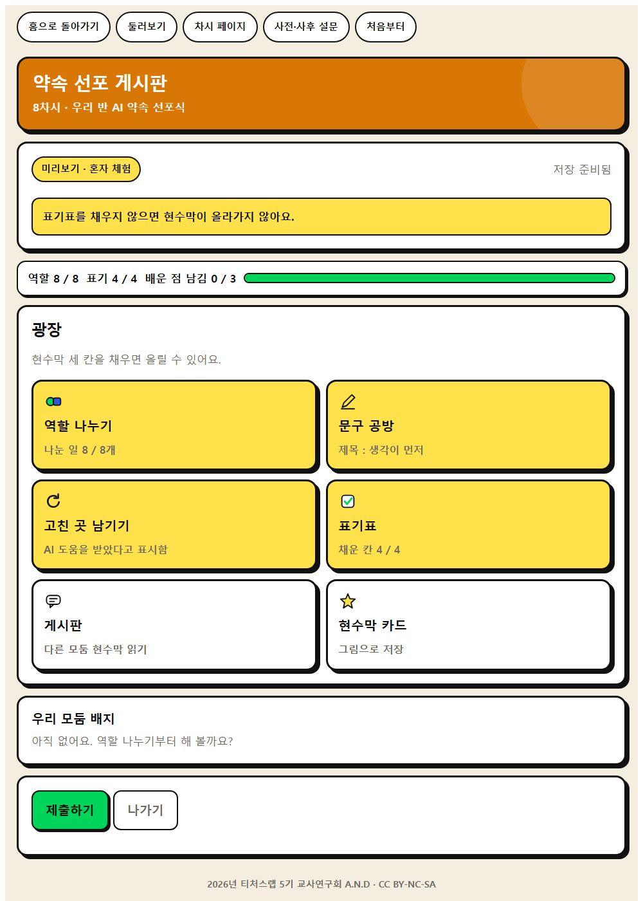
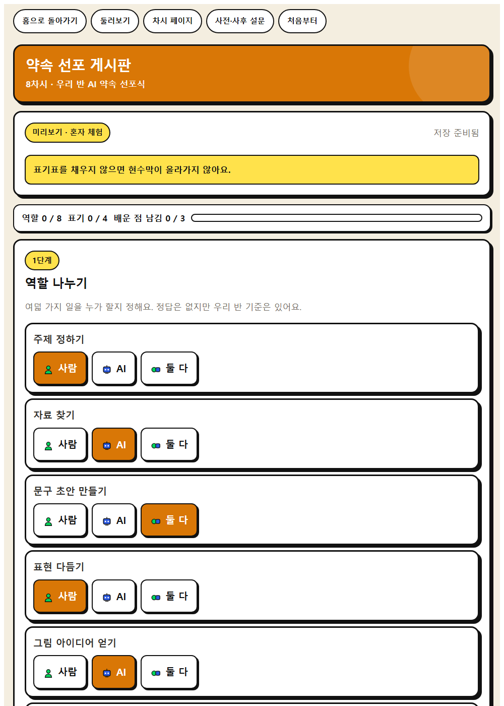
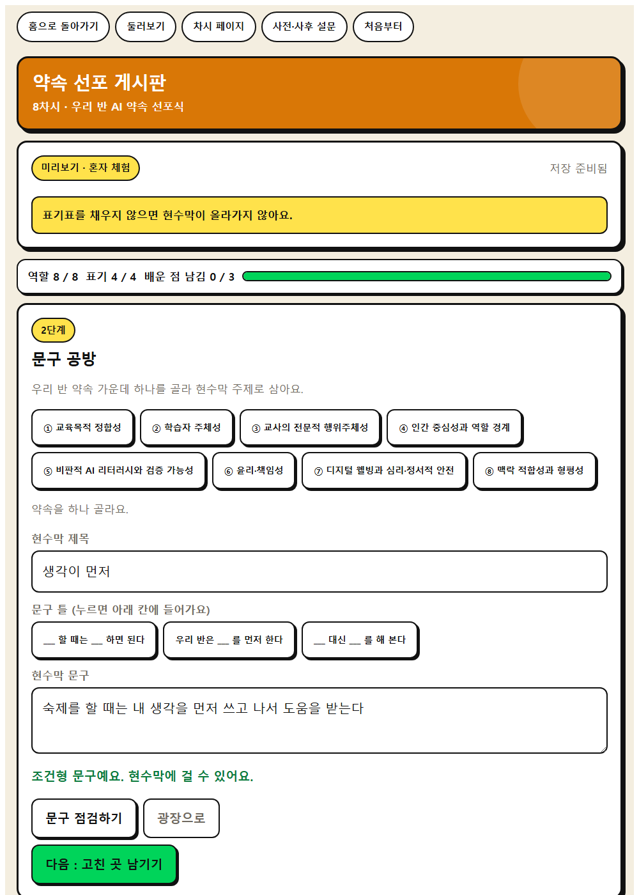

우리 반 AI 약속을 다른 사람에게 알릴 자료를 만들어 봅시다.




| 시각 | 단계 | 시간 | 무엇을 하나 |
|---|---|---|---|
| 0분 ~ 5분 | 도입 | 5분 | 동기 유발 |
| 5분 ~ 15분 | 전개 1 | 10분 | [활동 1] 역할 나누기 |
| 15분 ~ 25분 | 전개 2 | 10분 | [활동 2] 캠페인 자료 만들기 |
| 25분 ~ 35분 | 전개 3 | 10분 | [활동 3] 활용 표기하고 선포하기 |
| 35분 ~ 40분 | 정리 | 5분 | 배움 정리 |
| 중점 역량 | 지식·이해 | 과정·기능 | 가치·태도 |
|---|---|---|---|
| 사회·관계적 사고 | 팀 안에서 사람이 할 일과 AI가 할 일을 나누는 것이 역할 분담이다. | 사람과 AI의 역할을 나누어 캠페인 자료를 함께 제작하기 | AI와 사람 모두의 기여를 존중하려는 자세 |
| 주체성 | AI를 활용해 만든 결과물에는 활용한 사실과 범위를 함께 밝혀야 한다. | AI 결과를 그대로 쓸지 고칠지 스스로 선택하고 활용 과정을 표기하기 | AI 활용에서 자기 역할을 의식하려는 자세 |
보조 역량 : 창의적 사고
| 단계 | 학습 내용 | 교사 발문과 예상 답변 |
|---|---|---|
| 도입 5분 | 동기 유발 | 발문 · 우리 반 약속을 1학년 동생들에게 알리려면 어떤 자료가 좋을까요? 예상 답변 · 그림이 크게 들어간 포스터가 좋겠습니다. 발문 · 포스터를 만들 때 AI에게 무엇까지 맡길 수 있을까요? 예상 답변 · 그림은 도움을 받고, 문구는 우리가 정해야 합니다. |
| 학습 문제 확인 | 발문 · 우리 반 AI 약속을 다른 사람에게 알릴 자료를 만들어 봅시다. | |
| 준비물과 유의점 |
| |
| 전개 30분 | [활동 1] 역할 나누기 | ★ 웹앱 역할 분담표 입력 화면 · 학생이 여기에 남긴 것이 활동지 1번 칸이 된다. 발문 · 모둠에서 사람이 할 일과 AI에게 맡길 일을 먼저 표로 나눠 봅시다. 예상 답변 · 문구와 배치는 우리가, 배경 그림은 AI에게 맡기기로 했습니다. |
| [활동 2] 캠페인 자료 만들기 | ★ 웹앱 캠페인 문구 등록 화면 · 학생이 여기에 남긴 것이 활동지 2번 칸이 된다. 발문 · 정한 역할대로 자료를 만들어 봅시다. 문구는 누구의 말인가요? 예상 답변 · 우리 반이 토의해서 정한 말입니다. 발문 · AI가 만든 그림을 그대로 쓸까요, 고칠까요? 예상 답변 · 글씨가 가려져서 배치를 우리가 다시 잡았습니다. | |
| [활동 3] 활용 표기하고 선포하기 | ★ 웹앱 AI 활용 표기표 작성 화면 · 학생이 여기에 남긴 것이 활동지 3번 칸이 된다. 발문 · 자료 아래에 무엇을 AI로 만들었는지 적어 봅시다. 왜 적어야 할까요? 예상 답변 · 누가 무엇을 했는지 밝히는 것이 정직한 방법이기 때문입니다. 발문 · 완성한 자료로 선포식을 열어 봅시다. 예상 답변 · 우리 반 약속 8조항을 함께 읽었습니다. | |
| 준비물과 유의점 |
| |
| 정리 5분 | 배움 정리 | 발문 · 오늘 만든 자료에서 내가 한 일은 무엇인가요? 예상 답변 · 문구를 정하고 그림을 골라 배치했습니다. |
| 다음 차시 예고 | 발문 · 다음 시간부터는 약속대로 직접 해 봅시다. | |
| 준비물과 유의점 |
|
약속 선포 게시판 · 모둠이 만든 캠페인 자료의 제목·문구·AI 활용 표기를 글로 등록하고, 교사 승인 뒤 학급에 공개한다.
활동지에도 같은 예시가 실려 있습니다. 무엇을 쓰는지 먼저 보여 준 뒤 학생이 자기 말로 바꾸게 합니다.
| 활동지 칸 | 학생 작성 예시 |
|---|---|
| 1. 사람이 할 일 / AI에게 맡길 일 | 문구와 배치는 우리가, 배경 그림은 AI에게 맡기기로 했습니다. |
| 2. 우리 모둠 문구 | 우리 반이 토의해서 정한 말입니다. |
| 3. AI 결과를 고친 곳 | 글씨가 가려져서 배치를 우리가 다시 잡았습니다. |
| 4. AI 활용 표기표 | 누가 무엇을 했는지 밝히는 것이 정직한 방법이기 때문입니다. |
| 이런 일이 생기면 | 이렇게 합니다 |
|---|---|
| 기기가 모자란다 | 모둠에 한 대만 두고 기록 담당을 정한다. 판단은 모둠이 함께 하고 입력만 한 사람이 한다. |
| 인터넷이 끊긴다 | 쓰던 내용은 그 기기에 남는다. 활동지에 먼저 쓰게 하고 연결이 돌아오면 제출한다. |
| 방 코드를 잃어버렸다 | 선생님 화면에서 기존 방 열기를 누르고 코드를 넣으면 다시 열린다. |
| 닉네임이 겹친다 | 막지 않는다. 뒤에 낸 제출이 반영되므로 닉네임 뒤에 숫자를 붙이게 한다. |
| 의견이 한쪽으로 쏠린다 | 소수 의견을 먼저 듣는다. 결과 크게 띄우기로 분포를 보여 주고 까닭을 묻는다. |
| 시간이 모자란다 | 활동 하나를 줄이고 정리 발문은 반드시 남긴다. 남은 활동은 활동지로 마무리한다. |
| 역량 | 잘함 | 보통 | 도움 필요 |
|---|---|---|---|
| 사회·관계적 사고 | 사람과 AI의 역할을 나누어 캠페인 자료를 함께 제작하기. 스스로 해내고 그렇게 판단한 까닭을 설명한다 | 사람과 AI의 역할을 나누어 캠페인 자료를 함께 제작하기. 친구나 교사의 도움을 조금 받아 해낸다 | 사람과 AI의 역할을 나누어 캠페인 자료를 함께 제작하기. 예시를 함께 보며 한 단계씩 따라 한다 |
| 주체성 | AI 결과를 그대로 쓸지 고칠지 스스로 선택하고 활용 과정을 표기하기. 스스로 해내고 그렇게 판단한 까닭을 설명한다 | AI 결과를 그대로 쓸지 고칠지 스스로 선택하고 활용 과정을 표기하기. 친구나 교사의 도움을 조금 받아 해낸다 | AI 결과를 그대로 쓸지 고칠지 스스로 선택하고 활용 과정을 표기하기. 예시를 함께 보며 한 단계씩 따라 한다 |
| 성취기준 | 창의적 체험활동(자율·자치) |
|---|---|
| 학생 산출물 | 캠페인 포스터 또는 영상, AI 활용 표기표 |
| 평가 방법 | 산출물 평가, 관찰 평가 |
| 수업 도구 | 캔바, 생성형 이미지 도구(교사 계정), 인쇄물 |
인간중심 사고를 기르는 AI적정활용 수업 WISE · 2026년 티처스랩 5기 교사연구회 A.N.D · CC BY-NC-SA